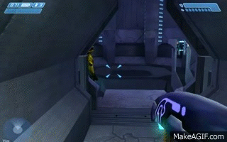

Bungie began the development of what would eventually become Halo in 1997. Initially, the game was a real-time strategy game that morphed into a third-person shooter before becoming a first-person shooter. During development, Microsoft acquired Bungie and turned Halo into a launch game for its first video game console, the Xbox. Halo was a critical and commercial success and is often praised as one of the greatest video games ever made. The game's popularity led to labels such as "Halo clone" and "Halo killer", applied to games either similar to or anticipated to be better than it. Its sequel, Halo 2, was released for the original Xbox in 2004, and the game spawned a multi-billion-dollar multimedia franchise that incorporates games, books, toys, and films.
More than six million copies had been sold worldwide by November 2005. A remaster of the game, Halo: Combat Evolved Anniversary, was released for Xbox 360 by 343 Industries on the 10th anniversary of the original game's launch. Anniversary was re-released alongside the original competitive multiplayer as part of Halo: The Master Chief Collection in 2014.
The first official promotional image for Halo, depicting an early model of the protagonist which would eventually become Master Chief
Halo was initially conceived as an indirect successor to Bungie's previous first-person shooter games, Marathon and Marathon 2: Durandal. According to company co-founder Alex Seropian, certain motifs of both Halo and the Marathon series, such as their similar protagonists and representation of artificial intelligence, stemmed from a common stylistic archetype. After the 1995 release of Durandal, Bungie began to consider ideas for their subsequent game. Undecided about further entries in the Marathon series, the team was willing to try something new. One of the ideas that the team then began to develop was that of a first-person shooter game described by co-founder Jason Jones as "the natural extension of Marathon, which would have turned out to be something along the lines of Quake".
Concurrently, the team explored the concept of a vehicular combat game that featured tank battles in a futuristic setting, internally dubbed "The Giant Bloody War Game". Jones started the design of a 3D engine that could generate height-mapped graphics to visualize elevated surfaces, and he eventually suggested that Bungie use the technology to realize the "tank combat" idea. The team was enthusiastic about that prospect and proceeded to cancel their first-person shooter project–to commit to the creation of "The Giant Bloody War Game". However, Jones struggled to implement a physics model to simulate vehicles in the game, which led Bungie to change their plans and develop the real-time strategy game (RTS) Myth: The Fallen Lords, released in 1997.
Around this time, Bungie comprised around 15 people working in south Chicago, Illinois. After Myth was completed and Bungie decided on a sequel, Myth II: Soulblighter, Jones delegated its development to the company's other designers and resumed his work on the technology that had not been applied to the 1997 title. A group of three Bungie staffers: 7'02''–7'05'' began to develop an RTS with a focus on science fiction, realistic physics simulations and three-dimensional terrain. Early versions used the Myth engine and isometric perspective. The project had the initial working title Armor, but was changed for being "boring" and for the project's dramatic changes from what was first envisioned. It was switched to Monkey Nuts, then Blam! after Jones could not bring himself to tell his mother the original name.
Experimenting with ways of controlling units, Bungie added a mode that attached the camera to individual units. The vantage point continually moved closer to the units as the developers realized it would be more fun for players to drive the vehicles themselves, rather than have the computer do it. "And controlling [the vehicle], just that double tactile nature of load a dude in, get a dude out, hands on the steering wheel—it was like, this shouldn't be an RTS game," recalled Seropian. By mid-1998 the game had become a third-person shooter.
Peter Tamte, Bungie's then-executive vice president, used his contacts from his former position at Apple to get lead writer Joseph Staten and project lead Jason Jones an audience with CEO Steve Jobs. Jobs, impressed, agreed to debut the game to the world at the 1999 Macworld Conference & Expo. Anticipation built for the unknown Bungie game after favorable reviews from industry journalists under non-disclosure agreements at Electronic Entertainment Expo 1999.
Days before the Macworld announcement, Blam! still had no permanent title; possible names included The Santa Machine, Solipsis, The Crystal Palace, Hard Vacuum, Star Maker, and Star Shield. Bungie hired a branding firm that came up with the name Covenant, but Bungie artist Paul Russell suggested alternatives, including Halo. Though some did not like the name—likening it to something religious, or a women's shampoo—designer Marcus Lehto said, "it described enough about what our intent was for this universe in a way that created this sense of mystery." On July 21, 1999, during the Macworld Conference & Expo, Jobs announced that Halo would be released for MacOS and Windows simultaneously.
The game's premise at this point involved a human transport starship that crash-lands on a mysterious ringworld. Early versions of the Covenant arrive to loot what they can, and war erupts between them and the humans. Unable to match the technologically advanced alien race, the humans resort to guerrilla warfare. At this point, Bungie promised an open-world game with terrain that reacted and deformed from explosions, persistent environment details such as spent shell casings, and variable weather, none of which made it into the final product. These early versions featured Halo-specific fauna, later dropped following design difficulties and the creatures' detraction from the surprise appearance of the Flood. The Master Chief was simply known as the cyborg. When Halo was shown at E3 in June 2000, it was still a third-person shooter.
Bungie's social culture—and the rush to complete the game—meant that team members provided input and feedback across disciplines. Aspects such as level design demanded collaboration between the designers creating the environments for players to explore, and the artists who developed those environments' aesthetics. Initially, artists Robert McLees and Lehto were the only artists working on what would become Halo. Bungie hired Shi Kai Wang as an additional artist to refine Lehto's designs. The aliens making up the Covenant began with varied exploratory designs that coalesced once each enemy's role in the gameplay was defined.
Spearheaded by Paul Russell, the game's visual design changed in response to the changing gameplay and story. The artists made efforts to distinguish each faction in the game by their architecture, technology, and weaponry. The UNSC's original curved look was made blockier to distinguish it from the Covenant; likewise human weapons remained projectile-based to provide a contrast to the Covenant's energy weapons, and their vehicles based on animals, with the Warthog being inspired by Lehto's love of off-roading. The interiors of Pillar of Autumn drew significant influence from the production design of the film Aliens. Organic, curvilinear forms along with a color palette of greens and purples were used for the Covenant, while the Forerunner came to be defined by their angular constructions; the interiors originally drew on Aztec patterns and the work of Louis Sullivan, before becoming more refined just five months from the game's completion.
Martin O'Donnell
Composer Martin O'Donnell and his company TotalAudio were tasked with creating the music for Halo's MacWorld debut. Staten told O'Donnell that the music should give a feeling of ancient mystery. O'Donnell decided Gregorian chant would be appropriate, and performed the vocals alongside his composing partner Michael Salvatori and additional singers. Because he did not know how long the presentation would be, O'Donnell created "smushy" opening and closing sections that could be expanded or cut as the time required to back up a rhythmic middle section. The music was recorded in Chicago and sent to New York for the show the same night the piece was finished.
Shortly before Bungie was bought by Microsoft, O'Donnell joined Bungie as a staff member, while Salvatori remained at TotalAudio. O'Donnell designed the music so that it "could be dissembled and remixed in such a way that would give [him] multiple, interchangeable loops that could be randomly recombined in order to keep the piece interesting as well as a variable-length". Development involved the creation of "alternative middle sections that could be transitioned to if the game called for such a change (i.e. less or more intense).
O'Donnell sat with the level designers to walk through the levels, constructing music that would adapt to the gameplay rather than be static; "The level designer would tell me what he hoped a player would feel at certain points or after accomplishing certain tasks." Based on this information, O'Donnell would develop cues the designer could script into the level, and then he and the designer would play through the mission to see if the audio worked. He made sparse use of music because he believes that "[music] is best used in a game to quicken the emotional state of the player and it works best when used least," and that "[if] music is constantly playing it tends to become sonic wallpaper and loses its impact when it is needed to truly enhance some dramatic component of gameplay." The cutscenes came so late that O'Donnell had to score them in only three days.
Halo is credited with modernizing the FPS genre. According to GameSpot, Halo's "numerous subtle innovations have been borrowed by countless other games since." The game is often cited as the main reason for the Xbox's success, and it began what is commonly regarded as the system's flagship franchise. In July 2006, Next-Gen.biz published an article estimating Halo as the second-highest revenue-generating 21st century console video game in the United States, behind Grand Theft Auto: Vice City. The game's popularity sparked the usage of terms like "Halo clone" and "Halo killer." The Halo engine has been used for the game Stubbs the Zombie in Rebel Without a Pulse.